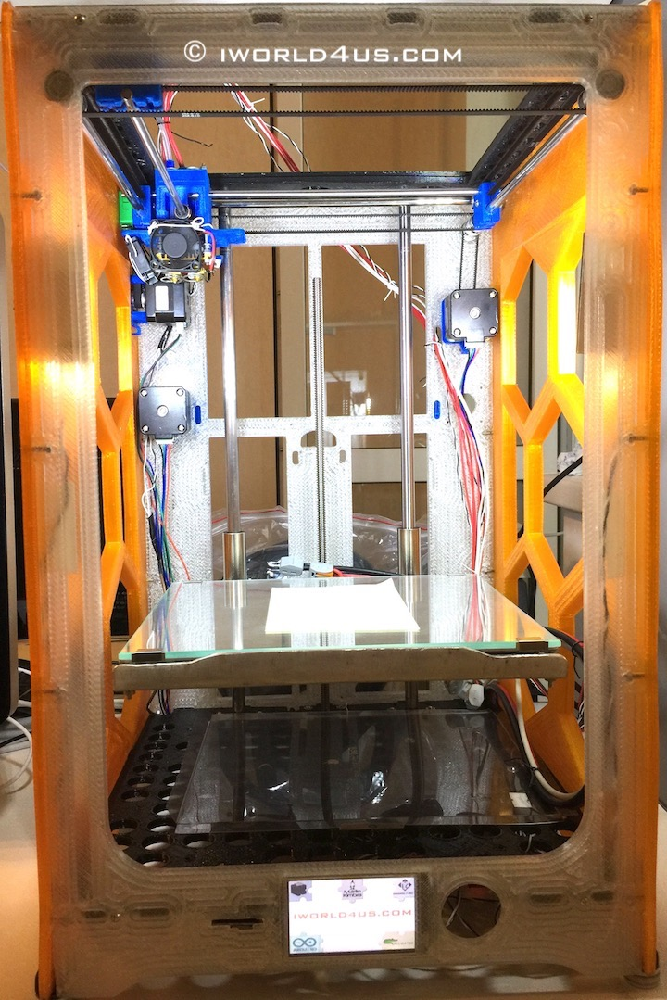

DIY Ultimaker 3 4 Extended ++

1. 6 panels h=h+40mm (215x215x340mm printing area).
2. Parts.
3. Arduino Ultimaker Shield - modified for Arduino Due.
4. Delete two 5V power pins.
5. Delete pin3 and connect 3.3V from pin2 to ++ pins.
6. Delete wiring from d2/d3/d4 pins (Attention: 24V).
7. Mount three Level Shitter (PC817).
8. Mount EEPROM.
9. And connect Nextion 3.2 display to comm3 (GND/RX/TX) and 5V.
10. Connect three wires to SD card slot (MISO/MOSI/SCK) CS(SDSS) to d53.
11. 3.3v from Nextion to SD (GND to GND).
12. 1k for DRV8825 (delete fault pin from driver).
13. DRV8825.
14. Set current before motor connection (for extruder 16 microstep max).
15. TMC2130 for silent X/Y without spi 16 microstep (remove all jumpers and 100k ground resistor) (en/dir/step for protection can be connected through 390 Om).
16. Make protection for TMC drivers.
17. Ultimaker Shield - modification reference.
18. Write Nextion Firmware to MicroSD and flash it.
19. Power 24v 7A (separate for heated bed - external MOSFET) / 5V 2A for Nextion and three Fans / 12V 1A for Arduino and Fans / 24V 4A for motor
Drivers and Hotend.
20. Top.
21. Fan x2.
22. Feeder x2.
23. Hotend 24V 30W x2.
24. Two colors printing (SBS).